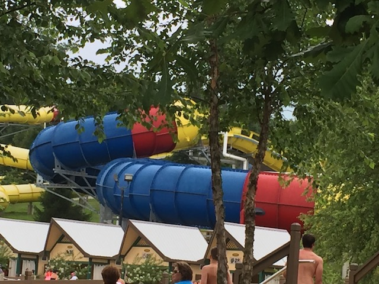

| |
Mammoth Review

We're here at Holiday World, in their Splashin Safari Water Park, and we're here to ride their star water slide. Mammoth. Now looking at Mammoth, it just appears to be yet another water coaster (No, not an actual water coaster, that may or may not count as a credit, depending on how much coaster is in the water coaster, an actual water slide water coaster). I mean, I love water coasters, but they already have Wildebeest, one of the best water coasters, and this one...what makes this one so special? Glad you asked. You see, Mammoth is so far, the only family raft ride water coaster. Yep. This is one of those family raft rides, only as a water coaster. Now, I'm not the biggest family raft ride fan. A lot of times, I'll rip on them. Even the family raft ride here, Zoombabwe, is fun. Possibly the best family raft ride. But still, that doesn't quite explain why Mammoth is so good. Well, a couple things. #1. You get to face all your friends while riding, so you get to see everyone's faces and expressions during the ride, and they're laughing and having fun, so now you're laughing and having fun, and that just makes it so much better. And on top of that, you could be sitting in any direction. You could be riding backwards, or sideways, and that could change whenever since yeah. This ride also spins. So yeah. We're gonna have some fun on this ride! We all get in the family raft ride, and away we go. We start to climb up the lifthill, yeah. Just like on Wildebeest, which is nice. We go around a turn inside a tunnel, and then DROP!!! WEEE!!!! Yeah, most family raft rides flat out don't have drops like this, cause yeah. On a family raft ride, this is really fun. Yeah, it's a small drop, but it really goes a long way on a family raft ride. And because is a family raft ride water coaster, we're going back up. WEE!!! We still have some speed at the top, and then go through another enclosed turn. Oh boy. More laterals. Who knows what's coming next? These laterals keep on going. And we're going faster! Crap! This is a *splash* DOWNWARD HELIX!!! We then head over an airtime hill, and on a family raft ride, that is actually kind of scary. Sure, the airtime is NOTHING compared to something like Twin Peaks. But it's gonna get everyone laughing and having an even better time. Rise up another hill, and back into the dark we go. We go down a turn and...WHOA!!! Down a drop. A big drop. OK, not actually a big drop, but the biggest drop on the ride, and a really fun part of the ride. We head up and then go through another enclosed turn. That turns out to be yet another downward helix! We get some speed, spit back out into the light, and into another airtime hill. AWESOME!!! We head up, go around another downward helix and SPLASH!!!! The ride is over, and everyone is just laughing and having an amazing time. Maybe my ride was better than average since we had a big group with a lot of weight, but yeah. This ride is freaking amazing. Unquestionably, one of the best water slides ever made. I can not recommend this ride enough if visiting Holiday World and Splashin Safari.
10/10
Location: Holiday World
Opened: 2012
Built by: ProSlide
Last Ridden: June 27, 2018
Mammoth Photos

Home
|